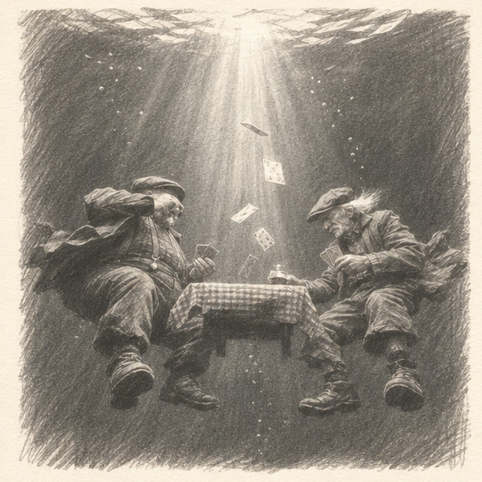

← Tous les films
Les papys sous le faisceauPlacement et lumière, graphite généré d’après le photogramme.
Papys Brindillette
Sketch · Groland · Canal+9:16



Deux papys jouent aux cartes dans un univers sous-marin : une situation familière déplacée dans un décor impossible.
Images du film